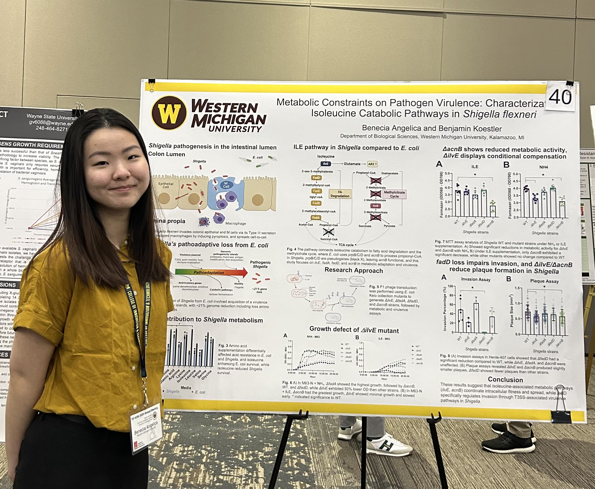

✓ Completed Thesis Project
My thesis research explored how branched-chain amino acid (BCAA) catabolism supports Shigella flexneri virulence. Shigella is a highly infectious pathogen that causes severe diarrheal disease by efficiently consuming host BCAAs—particularly isoleucine—which can induce amino acid starvation in infected tissues. I investigated whether disrupting genes in the isoleucine degradation pathway (ilvE, fadA, fadD, and acnB) would impair both the bacteria's metabolism and its ability to cause infection.
Invasion: Only the fadD knockout showed significant reduction in bacterial invasion capacity relative to wild-type.
Plaque size: ilvE and acnB mutants produced modestly but significantly smaller plaques, indicating reduced intracellular replication.
Growth and metabolism: ilvE mutants showed reduced growth compared to wild-type. In NH₄-limited conditions, both ilvE and acnB mutants showed impaired metabolic activity. Notably, only acnB mutants recovered metabolic capacity when isoleucine was supplemented, suggesting acnB-dependent ILE catabolism is specifically important for nutrient-poor survival.
These results reveal differential roles for individual BCAA catabolic genes in Shigella virulence, and highlight how metabolic specialization—particularly isoleucine scavenging—is linked to pathogenic success. The gene-specific findings suggest potential therapeutic targets that could disrupt Shigella's metabolic adaptation without broad-spectrum effects.